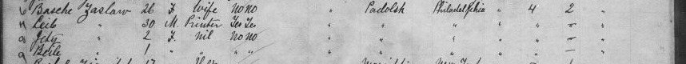

The Saslows of Podolia
Benjamin and Bessie Saslow, from Podolia to South Philadelphia, 1892–1893.
Benjamin and Bessie
Doris Zaslow’s mother, Catherine, was the daughter of Benjamin Saslow, whose Hebrew name, on his gravestone, was Dov son of David. He was born Ber Zaslaver in Tulchin on 20 March 1863 (in America he gave June 1865) and reached America in 1892, the year he always gave to census takers; his ship has not been found. He was a paperhanger. In 1900 he could read, write and speak English, but when he was naturalized on 15 December 1902 he signed his petition with his mark.1
His wife, Bessie (Basche; Hebrew Batya), was born in March 1867. Her parents were Harry (Hebrew Aharon) Weiss and Molly Gold. In 1900 she could not yet read, write or speak English; the next year’s city directory lists her as a grocer, at the same address as her husband.2
The crossing of 1893
Bessie followed her husband a year later with their two small daughters. A Hamburg emigration list records Basche Zaslaw, 26, with Jety, 3, and Beile, 1, leaving Hamburg on 16 June 1893, from “Podolsk” and bound for Philadelphia. They crossed from Glasgow on the Anchor Line’s Circassia and landed at Ellis Island on 3 July 1893.3


The match is strong, about 90%. Catherine’s Hebrew name on her gravestone is Beila, and her mother’s is Batya, matching Beile and Basche; Beckie’s and Catherine’s birth dates in the 1900 census, December 1889 and April 1891, fit Jety’s and Beile’s ages. The man travelling with them, Leib Zaslaw, 30, a printer who could read and write, was probably not Bessie’s husband, who was Dov, a paperhanger who signed with a mark, and who named a son Leib in 1895, which Jewish custom avoided for a living father. Leib was probably a relative escorting the family.3
The route is unusual and has a likely explanation. That same month, June 1893, Hamburg banned Russian steerage passengers from embarking because of fears of cholera, and many emigrants went instead by the “indirect” route across the North Sea to Britain and on to America from Liverpool or Glasgow. The records do not say why the family went by Glasgow; the ban is a reasonable inference.4
Philadelphia
The Saslows lived in South Philadelphia, the city’s main Jewish quarter: at 787 South Third Street in 1900, at 1924 South Fifth Street in 1910, and by 1920 in their own house at 2208 South Fifth Street. Benjamin had his own paperhanging business. Five children lived to adulthood:
- Beckie (Jety), born in December 1889 in Russia, who married David Mitchell and died on 26 August 1914, aged 25;
- Catherine (Beile, Katie), born in April 1891 in Russia: Doris’s mother;
- Louis, born in Philadelphia in 1893 or 1895;
- Herman, born in November 1896;
- Mollie, born in April 1899.5
Bessie died on 8 May 1936 at her daughter Catherine’s house, 2163 East Cambria Street, and Benjamin on 19 July 1937, aged 72 (his gravestone says 73). They are buried at Har Jehuda Cemetery in Upper Darby, outside Philadelphia. Benjamin lies in section D in the plot of a Tulchiner society, a burial society of people from Tulchin, and Catherine, who died seven weeks after him, in the next grave.6
Why Tulchin. The burial plot was the first clue: Jewish immigrants were usually buried with their landslayt, people from the same town, in plots bought by a society named for it (a landsmanshaft). The society that owns the plot was probably Philadelphia’s Tulchiner Beneficial Association, into which two other societies later merged.7 Tulchin’s own records, described below, now point the same way.
Ber, son of David
Tulchin’s Jewish registers survive from the 1840s, and they answer the question the burial plot raised. On 14 January 1847 two young people married in Tulchin: Duvid, son of Berko Zaslaver, aged 18, and Khasya Dvoyra Nemirovskaya, aged 17, daughter of Duvid.8 Over the next quarter-century the registers record their children: Khaya Sima, born in February 1859; Ber, born on 20 March 1863; Bluma, born about 1866; Tsipa, born in January 1869; and Avrum, born in August 1871.9 Ber’s Hebrew name is written Dov, and his father is “David son of Ber Zaslaver.”
In 1875 the Russian authorities took a census of the Jews of Podolia, males only. Tulchin’s list of Jews registered in other towns includes Duvid Berkovich Zaslava, that is, David son of Berko, aged 46, a townsman of Soroki in Bessarabia, with his sons Berko, 12, and Avrum, 3.10 A copy of the list went back to Soroki and survives in the National Archives of Moldova, with the same names and ages.11 Soroki (now Soroca, in Moldova) lies on the Dniester about 70 km south-west of Tulchin. Little Avrum died in Tulchin in March 1880.12
Ber grew up and married a Basya. On 26 July 1887 their first son was born in Tulchin and named Aron; he died at two months, on 3 September, of convulsions. His death entry describes the family as “colonists of Dombroveny, Soroki district.”13 Dov son of David, married to Batya daughter of Aharon: this is almost certainly Benjamin and Bessie Saslow, who named their first son, it seems, after Bessie’s father, already dead by 1887. The records do not show where their daughters Beckie (1889) and Catherine (1891) were born; it was not in Tulchin.14
The case that Ber Zaslaver was Benjamin Saslow (high, about 90–95%)
- For: The names: Ber (Hebrew Dov) son of Duvid, against Benjamin’s gravestone, Dov son of David.
- For: The wife: Ber son of Duvid had a wife Basya and a son Aron in 1887; Bessie Saslow was Batya daughter of Aharon, and Basya is the everyday form of Batya.
- For: The place: Tulchin, the town of Benjamin’s burial society, and the family’s surname, Zaslaver, against Zaslaw on Bessie’s 1893 passenger list.
- For: The family appears in four independent kinds of record: the 1847 marriage, the births of 1859–71, the 1875 census and the deaths of 1880 and 1887.
- Against: Benjamin later gave June 1865 as his birth, not March 1863, a common kind of difference; and no single record yet joins the Tulchin Ber to the Philadelphia paperhanger by name.
Bluma, 1888
On 10 August 1888, in Tulchin, Bluma, 22, daughter of Duvid Zaslaver, married Itsko Yankelevich Vaisman (Weissman), 24, a Tulchin townsman and army reservist. The register says she was “from Dobroven.”15 She was Benjamin’s sister. Their son Yankel was born in Tulchin in December 1889.16 Dobroven is Dombroveny (Dumbrăveni), a Jewish farming colony in Soroki district founded in 1836 by Jewish settlers from Podolia; JewishGen’s indexes of Bessarabian records show other Zaslaver families there and in Soroki into the 1920s.11
Zaslaver means “from Zaslav,” the town now called Iziaslav, in Volhynia. The family had lived in Tulchin since at least the 1840s, but its legal registration, as Soroki townspeople and Dombroveny colonists, suggests that an earlier generation had joined the colony across the Dniester, where Jewish farming colonists were given land and, for a time, relief from some taxes and from army service. Benjamin’s great-grandfather on this line was Berko Zaslaver, Duvid’s father, born about the beginning of the nineteenth century.
Notes
-
US census, 1900, Philadelphia Ward 3, ED 59, sheet 6B (RZ-S27); declaration of intention, 26 October 1900, and petition no. 9235, 15 December 1902, Circuit Court, Eastern District of Pennsylvania (RZ-S30, RZ-S31); gravestone, Har Jehuda (RZ-S57). ↩
-
US census, 1900 (RZ-S27); Philadelphia city directory, 1901; Pennsylvania certificate of death no. 46907, Bessie Saslow, 1936 (RZ-S44); her daughter Beckie’s certificate, 1914, also names her as Bessie Weiss (RZ-S46). ↩
-
Hamburg passenger list, ship Breslau, 16 June 1893, p. 122, lines 27–30 (RZ-S32); Ellis Island passenger list, SS Circassia, arrived 3 July 1893 (RZ-S06, RZ-S33), statueofliberty.org records J61Q-W2J and J61Q-W22; gravestones of Catherine Zaslow and Bessie Saslow (RZ-S57); US census, 1900 (RZ-S27). ↩↩
-
Sielemann (RZ-S65); Newman (RZ-S66); Norway Heritage, “Circassia (1), Anchor Line.” ↩
-
US censuses 1900, 1910 and 1920 (RZ-S27 to RZ-S29, RZ-S59); Pennsylvania certificate of death, Beckie Mitchell, 1914 (RZ-S46); WWI draft card and 1965 death certificate of Louis Saslow (RZ-S34, RZ-S35). ↩
-
Pennsylvania certificate of death no. 46907 (RZ-S44); Find a Grave memorials 208792137 and 179556327 (RZ-S48, RZ-S49); Har Judea Cemetery burial register, section D (RZ-S58). ↩
-
Har Judea burial register (RZ-S58); JewishGen Cemetery Discovery Project, Har Jehuda burial societies; YIVO finding aids RG 838 and RG 1626. ↩
-
Tulchin Jewish marriages, 1847, no. 3 (14 January 1847): Duvid Zaslovyr, 18, son of Berko, and Khasya Dvoyra Nemerovskaya, 17, daughter of Duvid. State Archives of Khmelnytskyi Region, fond 227, opys 1, sprava 6722. Indexed in JewishGen, “Ukraine Marriages and Divorces, Group 2” (RZ-S107). ↩
-
Tulchin Jewish births: Khaya Sima, 13 February 1859 (ДАХмО 227-5д-41, girls no. 17); Ber, 20 March 1863, mother Khasya daughter of Duvid (ДАВіО 904-35-2, boys no. 42, PDF pp. 203–204); Tsipa, 15 January 1869, “Duvid Zaslaver from Soroki” and Khasya (ДАВіО 904-35-8, girls no. 7, PDF p. 133); Avrum, born 27 August 1871 and circumcised 3 September, “Duvid Zaslaver from Tulchin” and Khasya daughter of Duvid (ДАВіО 904-35-10, boys no. 86, PDF p. 53). Bluma’s birth is not in the surviving books: those for 1865, the second half of 1866 and 1867 have no Zaslaver, and the first half of 1866 is missing. Free scans on Wikimedia Commons; indexed in JewishGen, “Ukraine Births, Group 3” (RZ-S106, RZ-S107). ↩
-
Jewish census of Podolia province, 1875, Bratslav district, list of Jews of other towns living in Tulchin: State Archives of Khmelnytskyi Region, fond 226, opys 80, sprava 1169, entries on pp. 14–15, nos. 71–73. Free scan on Wikimedia Commons (RZ-S102). ↩
-
JewishGen, Bessarabia Out-of-Town Jews database: Tulchin, 1875, registered in Soroki, page 586, nos. 43–45 (ZASLOVO Duvid son of Berko, 46; Berko, 12; Avrum, 3), National Archives of the Republic of Moldova, fond 6, opis 6, file 38/1 (RZ-S103). Other Zaslavers of Soroki and Dombroveny, 1866–1922, in JewishGen’s Bessarabia revision list, birth and death databases (RZ-S104). Dombroveny: Encyclopaedia Judaica, “Dombroveni.” ↩↩
-
Tulchin Jewish death register, 1880, record M19, State Archives of Vinnytsia Region, fond 904, opys 35, sprava 14, indexed in JewishGen’s Ukraine Deaths database (RZ-S88). ↩
-
Tulchin Jewish births, 1887, boys no. 138 (26 July 1887): Aron, son of “Ber son of Duvid Zaslaver, townsman of the colony of Dobroven, Soroki district,” and his wife Basya, no patronymic given; in Hebrew “Ber son of David Zaslaver” (ДАВіО 904-35-20, PDF pp. 179–180; JewishGen, “Ukraine Births, Group 3”); Tulchin Jewish deaths, 1887, boys no. 44 (3 September 1887): Aron Berkovich Zaslaver, colonist of Dombroveny, Soroki district, two months (ДАВіО 904-35-22, PDF p. 52) (RZ-S106, RZ-S107). ↩
-
Tulchin Jewish births of November–December 1889 and March–May 1891 (ДАВіО 904-35-20 and 904-35-24) were read in full without finding either girl; JewishGen’s Bessarabia birth index has no Zaslaver birth in 1889–91. ↩
-
Tulchin Jewish marriage register, 1888, no. 66 (10 August): State Archives of Vinnytsia Region, fond 904, opys 35, sprava 12, PDF page 237. Free scan on Wikimedia Commons (RZ-S99). The place reads “изъ Добровена” in the Russian column. ↩
-
Tulchin Jewish births, 1889, boys no. 188 (2 December 1889): Yankel, son of Itsko Vaisman and Bluma Duvidovna (ДАВіО 904-35-20, PDF p. 484). ↩